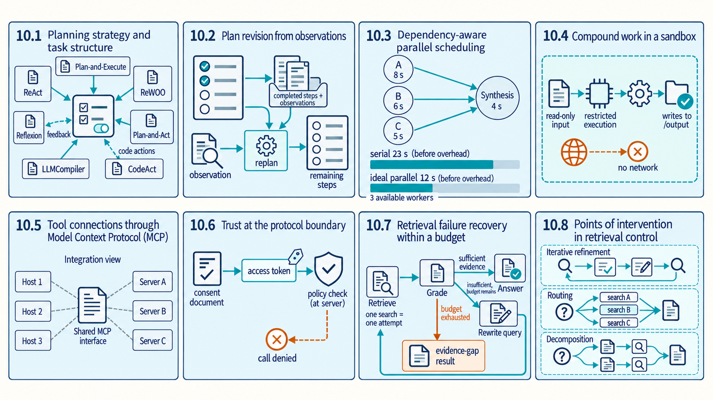
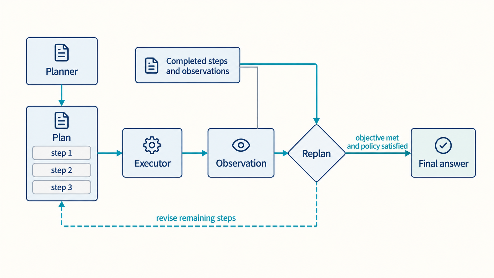
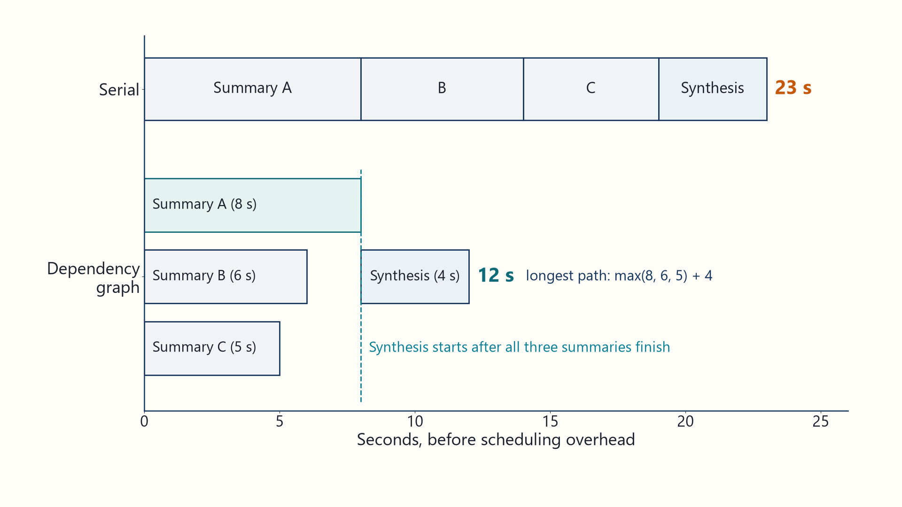

10 Agent planning and tool connections
An agent asked for summaries of three documents may waste time reading them one after another. An agent searching for a missing fact may need to change its next query after seeing the first results. Planning extends the controlled tool loop from Chapter 9 by making remaining work and dependencies visible. The choice depends on task structure, uncertainty, task durations, and safe opportunities for parallel work. Shared tool connections and retrieval recovery add ways to execute that work without changing the application’s authorization and outcome checks.

The map compares stepwise action, explicit plans, dependency graphs, and sandboxed code. It then separates shared tool connections from consent, scopes, and credentials, and shows retrieval recovery stopping within an explicit budget.
10.1 Planning strategy and task structure
A stepwise agent can choose the next action without keeping a separate plan. When the application needs to review remaining work or find independent subtasks, a planning component turns the goal and current state into proposed executable steps. Its planning policy is the rule or model instruction used to choose and order those steps.
- Planner: The model or software component that applies a planning policy to select actions, order dependencies, and propose a stopping condition. Application code still validates execution and termination.
The useful question is which rule for selecting and ordering actions matches the task while keeping execution within its limits. These methods do not all replace one another. ReAct and explicit planning describe how actions are chosen. A feedback method can improve a later attempt, while an action format specifies what the model sends for execution. Either can be combined with a planning or action loop.
Plan-and-Execute creates a full plan before acting and then runs its steps. The upfront plan is inspectable but needs a way to reject or revise it when observations invalidate later steps. Wang and colleagues1 describe Plan-and-Solve, one plan-first prompting method, which does not define a complete production architecture. ReWOO, a planning method described by Xu and colleagues2, plans tool work before observations return and links future outputs through variables. Workers fill those variables with tool results, and a solver uses the plan and evidence to answer. A failed result must be handled before a dependent call uses it.
Reflexion, a feedback method described by Shinn and colleagues3, uses an evaluator’s feedback and the prior attempt to generate a verbal reflection. It saves that reflection for the next attempt without updating model weights. Its value depends on feedback quality and a strict retry budget. Plan-and-Act separates a model that writes a high-level plan from an executor that turns it into environment actions. Its dynamic replanning variant revises the plan from observations.4 LLMCompiler is a system that plans function calls as a dependency graph and schedules ready calls in parallel.5 CodeAct is an action format in which the model writes executable code instead of selecting one tool call.6
The comparison below uses task uncertainty, dependencies, execution cost, and failure recovery as shared criteria. Its first column includes both planning methods and complementary feedback or action methods.
| Method | Control structure | Best fit | Primary cost or risk |
|---|---|---|---|
| ReAct | One action after each observation | Exploratory tasks and uncertain scope | Sequential latency, token use, and loop risk |
| Plan-and-Execute | Create a full plan, then execute its steps | Stable tasks where the plan can be reviewed before action | Stale plans when observations invalidate later steps |
| ReWOO | Create variable-linked tool work before observations return | Reusable tool plans with explicit intermediate dependencies | Unresolved variables and weak recovery from failed steps |
| Reflexion | Generate and store a reflection from feedback between attempts | Tasks with informative, trustworthy feedback | Retry cost and evaluator-driven error reinforcement |
| Plan-and-Act | Separate high-level planning from execution, optionally replan from observations | Clear phases whose details change with observations | Replanning call cost and errors in revised plans |
| LLMCompiler | Stream a dependency graph and dispatch ready nodes | Independent subtasks with a merge step | Dependency correctness and harder traces |
| CodeAct | Emit executable code as the action | Loops, data transformation, and library composition | Untrusted-code execution requires isolation |
Selection rule
ReAct fits tasks in which the next useful action depends strongly on the latest observation.
Explicit planning adds value when the plan provides auditability, cheaper execution, parallelism, or coordination.
A more elaborate planner must still obey the tool schemas, authorization gates, iteration limits, and outcome checks established in Chapter 9.
10.2 Plan revision from observations
The default agent loop already replans implicitly after every observation. A separate plan becomes useful when the product needs visible remaining work, a more capable model to plan, or a cheaper model to carry out the steps. Planning can remain implicit in each step or become persistent state that the application revises.
The one-action-at-a-time ReAct loop from Section 9.3 adapts to new observations, but it needs a maximum number of steps and an explicit stopping condition. Serial execution is a property of this example, not a ban on a tool carrying out approved parallel work.
ReAct
This method applies to goals for which the next action is uncertain until the latest tool result is observed. It is useful when the search space is exploratory, the tool set is focused, and frequent adaptation matters.
The model selects a typed action, and the application executes it. The application adds the resulting observation to state before the model makes the next decision. This is the minimal general loop and the baseline for adding explicit planning.
Primary limits: ReAct adds serial tool latency and repeated reasoning tokens. Weak tool selection can compound errors, and a missing step budget can leave the loop running.

The replan node is the defining addition. A static plan-and-execute system cannot absorb newly discovered constraints without a separate correction path.
The following replanner applies this distinction between remaining work and a final response.
This abbreviated Python example assumes that state has the fields read below and that objective_satisfied, policy_satisfied, compose_answer, and revise_using are supplied by the application. It returns a Plan or Response. The application validates the incoming state before calling it. A final response needs both objective and policy checks. If the revision produces no valid unfinished step while those checks have not passed, the function raises ValueError for the surrounding workflow to stop or escalate. It does not turn an empty plan into success.
Code example: A replanner returns either remaining work or a final response.
from dataclasses import dataclass
@dataclass
class Plan:
steps: list[str]
@dataclass
class Response:
response: str
def replan(state) -> Plan | Response:
if objective_satisfied(state) and policy_satisfied(state):
return Response(response=compose_answer(state))
remaining = revise_using(
objective=state.objective,
original_plan=state.original_plan,
completed=state.past_steps,
observations=state.observations,
)
if (not isinstance(remaining, list) or not remaining
or any(not isinstance(step, str) or not step.strip()
for step in remaining)):
raise ValueError("no valid unfinished steps")
return Plan(steps=remaining)Plan-state invariant
The plan should contain only unfinished work. Completed steps and their observations belong in execution history, and the final response should be produced only when the objective and policy checks pass.
10.3 Dependency-aware parallel scheduling
The example in Section 10.2 stores remaining work as a sequence and executes one step at a time. That execution rule makes even independent tasks wait, which can increase wall-clock time. A list alone does not require serial execution. A dependency graph states which outputs each task needs, allowing a scheduler to run ready independent tasks concurrently and combine results after their prerequisites finish.
- Task DAG: A directed acyclic graph whose nodes are executable tasks and whose edges state that one task depends on another task’s output.
Kim and colleagues7 report speed and cost improvements from LLMCompiler on the tasks and tool sets in their study. Its planner can stream tasks and dependencies, its scheduler replaces references to earlier outputs with their actual values, and its executor runs ready calls. A final combination step produces an answer or requests more planning. These results are not universal guarantees. Parallel calls shorten latency only when resources permit overlap, and they need not reduce the number of tool calls or their price.
Let \(G\) be the task graph, \(\pi\) one dependency-respecting path through it, and \(t_v\) the duration of task \(v\). Even with unlimited workers, the graph cannot complete sooner than its longest dependency path:
\[ T_{DAG}\ge\max_{\pi\in\mathrm{paths}(G)}\sum_{v\in\pi}t_v \tag{10.1}\]
Here, \(T_{DAG}\) is the elapsed time to finish the graph and all durations use seconds. Each path follows task dependencies. This is a lower-bound latency model for the declared graph and task durations. Scheduling overhead, resource contention, and retries can add time. A final synthesis or join that takes time must be a node in the graph, as in the example below. Only work outside the graph adds a further join cost.
Example: Critical path versus serial execution
Three independent document summaries take 8, 6, and 5 seconds. A final synthesis depends on all three and takes 4 seconds. Assume at least three available workers, unchanged task durations, and no scheduling overhead or shared-resource conflict.
1. Serial execution takes 8 + 6 + 5 + 4 = 23 seconds before overhead. 2. In a dependency graph, the three summaries can start together. 3. The longest prerequisite path is max(8, 6, 5) + 4 = 12 seconds. Result: The idealized graph reduces the dependency-limited time from 23 seconds to 12 seconds.
Interpretation: The gain exists because the summaries are independent. Mislabeling a real dependency can make the faster schedule produce an invalid result.

The scheduler needs a concrete rule for determining which unfinished nodes may run at scheduler time t.
\[ \mathrm{Ready}(t)=\{v:v\notin\mathrm{Done}(t),\mathrm{Pred}(v)\subseteq\mathrm{Done}(t)\} \tag{10.2}\]
Here, \(\operatorname{Done}(t)\) denotes completed nodes, while \(\operatorname{Pred}(v)\) represents predecessor nodes. The expression selects unfinished nodes whose predecessors are finished. Readiness proves dependency completion only. Authorization, rate limits, and safe concurrency require independent checks.
Example: Ready nodes after one dependency completes
A graph contains A -> B, A -> C, and both B and C -> D. Only A is complete.
1. B’s predecessor set is {A}, which is contained in Done(t). 2. C’s predecessor set is also {A}, which is contained in Done(t). 3. D requires both B and C, so D is not ready. Result: The ready set contains B and C, allowing them to run concurrently.
Interpretation: The scheduler exposes parallelism already present in the dependency graph. It cannot safely invent independence that the plan did not establish.
The following loop turns dependency readiness into a dispatch rule.
This abbreviated Python loop assumes task objects with id and dependencies, an initially empty results mapping, and application-supplied run_in_parallel and joiner. The runner returns one successful result per dispatched task and raises on execution failure. The loop rejects duplicate task IDs, references to missing tasks, cycles, and incomplete batches. It returns the joiner’s answer only after all tasks succeed. Authorization, timeouts, cancellation, and resource-safe concurrency belong in the runner and are not implemented here.
Code example: A scheduler dispatches only tasks whose dependencies are satisfied.
class InvalidPlan(ValueError):
pass
class TaskFailure(RuntimeError):
pass
def ready_tasks(tasks, results):
return [
task for task in tasks
if task.id not in results
and all(dep in results for dep in task.dependencies)
]
task_ids = [task.id for task in tasks]
if len(task_ids) != len(set(task_ids)):
raise InvalidPlan("duplicate task ID")
if any(dep not in task_ids
for task in tasks for dep in task.dependencies):
raise InvalidPlan("missing dependency ID")
if results:
raise InvalidPlan("this example requires empty initial results")
while len(results) < len(tasks):
batch = ready_tasks(tasks, results)
if not batch:
raise InvalidPlan("cycle in unfinished tasks")
batch_results = run_in_parallel(batch, results)
if (not isinstance(batch_results, dict)
or set(batch_results) != {task.id for task in batch}):
raise TaskFailure("batch did not return every dispatched result")
results.update(batch_results)
answer = joiner(results)The loop keeps invalid plan structure separate from an incomplete execution batch. It rejects missing IDs before dispatch and reports a cycle when unfinished tasks have no ready node. A full scheduler also records each task’s success, failure, or cancellation separately. A failed prerequisite must never count as a completed successful dependency. Its dependents are cancelled or blocked according to policy. These outcomes need different repairs and should remain distinct in the trace.
Graph evaluation
Graph evaluation tests dependency correctness, peak concurrency, critical-path latency, joiner faithfulness, cancellation, and partial failure. An end-answer score alone cannot reveal whether apparent speed came from skipping required work.
The graph must also declare which resources each task reads and writes, how cancellation is propagated, and what the join step requires. An undeclared side effect can make two apparently independent nodes conflict. A sequential reference run provides a comparison until tests show that the parallel schedule preserves the required state and result.
10.4 Compound work in a sandbox
Typed function calls are effective when each action maps to one limited capability. A task that combines loops, conditionals, local variables, and libraries can require many separate calls and observations. Wang and colleagues8 describe CodeAct, in which one executable program can combine those operations. It can still run inside a loop that returns execution results to the model. Because the code runs, the system must isolate it and limit its time, memory, filesystem, and network access.
The hard requirement is isolated execution with a deliberately small capability set. The generated program is untrusted input even when the model is normally reliable. The NIST Application Container Security Guide9 explains container isolation and its limits. A container alone does not prevent every kernel escape, secret exposure, unsafe mount, network path, resource attack, or harmful use of accepted output.
CodeAct
This method applies to computational subtasks expressible as code over explicitly mounted data and approved libraries. It is useful when a compact program replaces many repetitive tool calls or performs deterministic data analysis.
The model writes a program, an isolated runtime enforces time, memory, network, filesystem, and output limits, and captured results return as an observation.
Primary limits: Code execution must account for sandbox escapes, nondeterministic dependencies, oversized outputs, hidden side effects, and the cost of reviewing every allowed input and operation.
| Sandbox control | Question it answers | Example policy |
|---|---|---|
| Filesystem | What may the program read or write? | Read-only input mount and a writable temporary output directory only |
| Network | Which external systems may it contact? | Disabled by default or restricted to an allowlist |
| Resources | How much compute can it consume? | Wall-time, CPU, memory, process, and output-size limits |
| Secrets | Which credentials are visible? | No ambient credentials, only short-lived scoped tokens |
| Outputs | How are outputs accepted? | Output type, size, malware risk, and destination checks |
Example: A sandbox accepts one program and blocks another
Assume the runtime mounts a read-only /input/orders.csv, permits writes only under /output, and disables network access. An allowed program reads three intent values and counts the two get_refund rows. It writes {"refund_count": 2} to /output/result.json. The runtime returns exit status 0 and the output-file reference. The host then checks the JSON fields and value types before using the count.
A second program tries to make an HTTP request. The sandbox rejects that call because network access is disabled, returns a policy error, and produces no network side effect. The trace records the program, mounted paths, limits, exit status, and accepted or rejected output. These are expected outcomes under the stated policy, not a claim that the programs were run for this book.
Sandboxing controls generated code executed by one application. When approved capabilities live in other processes or services, the next design problem is how a host discovers and calls them without merging their permission systems. Section 10.5 introduces a shared protocol for those exchanges.
10.5 Tool connections through Model Context Protocol (MCP)
The planning methods above can use ordinary functions in the same process. When several applications and services change independently, each application may need different adapter code for each service. In a fully connected setup with N host applications and M services, that can mean N x M custom integrations.
- Model Context Protocol (MCP): A client-server protocol through which an AI host discovers server-provided tools, resources, and prompt templates and invokes them through shared message formats.
With MCP, the host receives a server’s capability list, checks it against host policy, and invokes an allowed tool through the protocol. The protocol does not decide whether a caller may use that tool or whether a proposed action is safe.

For N hosts and M services, shared message rules allow each host to implement MCP client support and each service to expose an MCP server, moving custom integration code toward N + M protocol implementations. This is a count of reusable implementations, not live connections. If every host uses every server, there can still be N x M client-server connections. MCP does not require a central hub. Authentication, service-specific behavior, version compatibility, and maintenance still need separate work.
The host is the application that manages model interaction and controls which data and actions the user permits. A Client is the host’s protocol component that connects to one MCP server and exchanges messages with it. The host creates one client instance for each server it uses. In the 2025-11-25 architecture, each client maintains its own session with one server.10 The figure’s star is a logical integration view: its central document represents shared message formats, not a server or gateway. Its dashed lines do not show runtime connections. Each host’s client support can create the separate client instances needed for its servers.
A server exposes capabilities backed by a database, API, filesystem, or another system. Through the matching client, the host requests available tools and the server returns each tool’s name, input schema, and description. The host checks the server and tool against policy before exposing the tool to the model or presenting an approval request. The model proposes a call, the host permits and sends it through the client, and the server runs or rejects the operation and returns its result.
Local stdio transport runs the server as a local process and avoids a network connection for the protocol exchange. It does not prevent that process from opening its own network connection. A remote transport needs authentication, authorization, and connection handling appropriate to the service.
- Confused deputy: A security failure in which software with legitimate authority is tricked into using that authority for a caller or purpose that was not approved. The table below lists this risk for tools. Section 10.6 explains the corresponding audience, resource, scope, and user-intent checks.
| Primitive | Controller | Purpose | Typical risk |
|---|---|---|---|
| Tool | Model proposes, host authorizes, server executes | Perform a typed action that may have side effects | Confused-deputy action or excessive permissions |
| Resource | Application or host | Read identified data into context | Sensitive-data exposure or prompt injection |
| Prompt | User chooses through the host | Invoke a server-supplied interaction template | Misleading scope or stale instructions |
| Sampling | Server requests, and the host mediates | Ask the host model to perform a completion | Unexpected model use, cost, or data flow |
| Roots | Host advertises | Tell a server the relevant filesystem roots | An overly broad scope increases possible harm, and access control remains separate |
| Elicitation | Server requests, and the user answers | Obtain missing information during execution | Social engineering or ambiguous consent |
The agent loop need not change when the transport changes. That separation is useful only if tool identity, permissions, errors, and source information remain visible in traces.
The next example filters discovered tools before creating the agent.
This abbreviated async Python example assumes an authenticated discovery adapter, a policy object, and an application-supplied create_agent. The adapter’s get_tools method returns normalized tool records, including a server_id set from the authenticated connection and an input_schema. These are this example’s adapter fields, not a promise that every MCP library returns that object. It returns an agent whose tool list contains only allowed discovered tools. An empty or fully rejected list creates an agent with no tools. Discovery or policy exceptions stop construction. The host checks authorization again before each invocation, because discovery approval alone does not grant permission for every argument or future call.
Code example: A host keeps capability discovery separate from agent execution.
async def build_agent(client, model):
discovered = await client.get_tools()
allowed = [
tool for tool in discovered
if policy.allows_server(tool.server_id)
and policy.allows_schema(tool.name, tool.input_schema)
]
return create_agent(model=model, tools=allowed)FastMCP is a Python library for writing an MCP server. It is an implementation aid, not the MCP protocol itself. The fixed documentation version11 explains how its decorator reads a Python function’s parameters and type annotations to create a JSON input schema. Its default validation may coerce values such as "4" into an integer. The example enables strict input validation to reject such a type mismatch before the function runs. Schema validation does not decide which records the function may read or which changes it may make.
This abbreviated server example assumes the two stores and search helper enforce their own access rules and return only allowed fields. Each function rejects an empty identifier, query, or reason. search_policy limits the requested result count to between one and eight. The functions return records, search results, or a draft and never submit that draft. The server adapter must turn input or access failures into tool error responses. This listing does not implement caller authentication or that error conversion. The application alone may submit a draft after approval.
Code example: FastMCP exposes support tools while keeping approval checks in the application.
from fastmcp import FastMCP
mcp = FastMCP(name="support-tools", strict_input_validation=True)
@mcp.tool
def lookup_ticket(ticket_id: str) -> dict:
"""Read allowed fields for one ticket, without changing it."""
if not ticket_id.strip():
raise ValueError("ticket_id must not be empty")
return ticket_store.read_public(ticket_id)
@mcp.tool
def search_policy(query: str, top_k: int = 4) -> list[dict]:
"""Search allowed policy records and return at most eight results."""
if not query.strip():
raise ValueError("query must not be empty")
if type(top_k) is not int:
raise ValueError("top_k must be an integer")
limited_k = min(max(top_k, 1), 8)
return policy_search(query, top_k=limited_k)
@mcp.tool
def draft_escalation(ticket_id: str, reason: str) -> dict:
"""Create a draft only, for a ticket the caller may access."""
if not ticket_id.strip() or not reason.strip():
raise ValueError("ticket_id and reason must not be empty")
return escalation_store.create_draft(ticket_id, reason)The decorator exposes schemas and documentation, while the underlying stores and search helper enforce the source system’s access policy. The names read_public and create_draft express required helper behavior, not checks supplied by the decorator. The server record needs both the FastMCP package version and the MCP protocol version because both can change over time. The example follows the cited fixed documentation and was tested with store and registration stand-ins, not a running FastMCP server.
10.6 Trust at the protocol boundary
A standard protocol makes a connection consistent, but it does not make the connected server or its outputs safe. Tool descriptions and returned documents are untrusted data. A malicious document can contain instructions intended to redirect the model, and an overly broad credential can let an otherwise valid call perform actions the user did not permit.
The MCP Security Best Practices12 guide addresses the risk that injected text can redirect software authority to a different caller or purpose, the confused-deputy problem defined in Section 10.5. Host applications treat retrieved tool output as untrusted data, keep system policy separate from that data, and validate every resulting tool action against policy outside the model’s text. The host also requires explicit consent where applicable, verifies caller identity, and supplies only the minimum permission scope.
High-impact actions, including file deletions and financial transfers, need a user-authorized policy and explicit human approval when that policy requires it. A previously approved scheduled write need not request fresh consent for every run, but it must remain within its approved scope. Credentials should follow the principle of least privilege. In protocol versions that provide roots, roots communicate relevant filesystem scope but do not enforce access control or create a sandbox. The host must still restrict actual file access and use short-lived, resource-scoped credentials rather than system-wide secrets. Pinned server package versions limit supply chain drift, and the host records tool discovery, arguments, approvals, and outcomes in an audit trail.
Dated supplement: MCP transport and authorization rules (MCP 2025-11-25)
The MCP 2025-11-25 Transports13 specification lists stdio and Streamable HTTP as standard transports. A local stdio client launches the server process and exchanges newline-delimited messages. JSON-RPC is the JSON message format used for requests, responses, and notifications that need no response. Streamable HTTP uses an HTTP endpoint and needs origin validation, authentication, and careful session handling. The transport changes network exposure and credential handling, not what a tool means or whether the host should permit the action.
Four actors and one credential make the authorization flow easier to follow:
- User or resource owner: The person who grants permission.
- Client: The MCP client acting for the AI host that asks to use a capability.
- Authorization server: The system that verifies the user and issues a limited credential.
- Access token: The credential that grants limited access.
- Resource server: The MCP server that checks the token before serving the requested capability.
For HTTP authorization, the MCP 2025-11-25 Authorization14 specification uses OAuth, an authorization protocol that lets a user allow a client to call a service with a limited token instead of sharing the user’s password. The client asks for a token intended for one MCP server, and that server checks that the token’s audience identifies it. An MCP proxy must not pass the received client token unchanged to a downstream API, because that API is a different recipient. If that API uses OAuth authorization, the proxy obtains a separate token intended for it.
PKCE, short for Proof Key for Code Exchange, protects an authorization-code flow by binding the code to a secret verifier stored by the requesting client. Before the user signs in, the client creates a secret verifier and sends a derived challenge. In the S256 method required when technically possible by the MCP 2025-11-25 authorization specification, the challenge is the base64url encoding of the SHA-256 hash of that verifier. After the authorization server returns a code, the client presents the original verifier. The authorization server derives the challenge again and compares it with the saved value before exchanging the code for a token. A copied code alone is not enough for an attacker to pass that check. Audience checks, short-lived tokens, PKCE where an authorization-code flow is used, and per-client consent reduce misuse of a user’s authority. They do not prove that the resulting tool action matches the user’s intent.
The audience rule follows RFC 8707, Resource Indicators for OAuth 2.015, and the verifier and challenge flow follows RFC 7636, Proof Key for Code Exchange by OAuth Public Clients16. These standards support the authorization mechanisms, while the application still decides whether the requested action matches the user’s approved intent.
![The host and MCP client request user consent and obtain an access token with audience MCP server. The client-presents-token connector ends on the MCP server's left edge, where audience and scope are checked. If the API uses OAuth, the MCP server requests a separate token from the downstream API authorization-server role; its issued token has audience downstream API and is presented by the MCP server to that API. A crossed-out path prohibits passing the incoming token through. These are protocol roles, not a requirement for separately deployed issuer products.](../assets/fig-m1-c10-f09.png)
A valid protocol message does not prove that the requested action is authorized. The host binds a user-approved intent to a resource-scoped token, and each server validates and executes with its own policy and credentials.
Dated supplement: elicitation and consent (MCP 2025-11-25)
The MCP 2025-11-25 Elicitation17 specification lets a server request missing information from the user through the host. In form mode, a server sends elicitation/create with a response schema. The host identifies the requesting server, displays the requested fields to the user, and returns an accept, decline, or cancel response.
The host must authenticate requesting servers, clarify needed inputs, allow user cancellation, and validate response schemas.
Form mode is appropriate for ordinary structured information. URL mode can direct a sensitive interaction to an external page, but the host still needs to bind that interaction to the authenticated user and show the user which server requested it.
Current comparison: MCP 2026-07-28
The MCP 2026-07-28 Specification18 defines stateless, self-contained requests and negotiates capabilities for each request. Its Authorization19 specification remains optional and transport-specific for HTTP. A stdio server obtains credentials from its environment rather than this HTTP flow. The current Roots20 specification marks roots as deprecated and continues to describe them as scope information, not access control. The same revision also deprecates sampling and logging.21 The 2025-11-25 examples above apply when implementing that version. Their details are not timeless protocol behavior.
After those protections are specified, the remaining choice is whether separately managed hosts and services benefit from shared discovery and call formats:
| Reasons to start with direct tools | Reasons to evaluate MCP |
|---|---|
| One application manages the tools in the same repository. | Capabilities must be shared across multiple hosts or agent frameworks. |
| Latency and end-to-end traces are critical. | Separately managed servers need shared discovery and call formats. |
| Schemas and implementation change together. | Independent discovery, versioning, and capability changes have real value. |
| The integration count is small and explicit. | The pairwise N x M integration problem is already measurable. |
10.7 Retrieval failure recovery within a budget
Chapter 7 localized RAG failures by checking retrieved evidence, claim support, and answer relevance. One-shot retrieval still stops after the first query even when its evidence is insufficient. Agentic retrieval checks those first results, then rewrites the query or selects another search method up to a fixed attempt limit.
A one-pass RAG system can rewrite the user’s question before searching, but it still has no retrieval retry if that search misses needed evidence. Vague language, multi-hop questions, corpus mismatch, and ambiguous entity names can cause a miss. Agentic RAG adds decisions about where to search and whether further retrieval is useful, so the system can route, inspect, rewrite, decompose, and stop.
- Agentic RAG: A retrieval-augmented system in which an agent chooses and iterates retrieval actions from observations, within a bounded recovery loop.
If the source is accessible and indexed or searchable, a recovery path can recognize insufficient results and change the next retrieval action. Rewriting cannot recover a fact absent from the allowed sources, repair failed parsing, or bypass access policy. A larger embedding model is a separate option when ranking quality, rather than missing data or control, caused the failure.
Iterative retrieval
This method applies to queries whose first retrieval may be noisy, incomplete, or expressed with the wrong vocabulary. It is useful when the system can cheaply inspect relevance and try a bounded number of refined searches.
The pipeline retrieves candidates and inspects their evidence quality. When the evidence is insufficient, it reformulates the query while preserving entities, dates, user constraints, and access scope. It generates an answer only after meeting the evidence-sufficiency rule. Trivedi and colleagues22 study IRCoT, which alternates retrieval with reasoning on multi-step questions. Jiang and colleagues23 study FLARE, which uses low-confidence predicted answer text to trigger retrieval during generation. Both report gains on their evaluated tasks. Neither is the exact retrieve-grade-rewrite loop shown in Section 10.8.
Primary limits: Each retrieval attempt adds latency and cost. An inaccurate evidence grader can trigger unnecessary retries, reformulation can drift from the question, and a missing attempt budget can leave the loop open ended.
The retriever is a separate choice from whether searches are retried. Exact search fits known symbols, identifiers, error strings, and text that may change before a vector index is rebuilt. BM25 uses weighted lexical matching and fits keyword-rich corpora. Dense embeddings can help with conceptual paraphrases, and with cross-language questions when the embedding model supports those languages. SQL or an API fits structured filters and aggregates. An agent can route among these methods, and hybrid retrieval can combine lexical and dense results as in Section 6.5. Compare them on labeled questions rather than assuming one always has the highest precision or lowest cost.
| Retriever | Signal | Strength | Failure to watch |
|---|---|---|---|
| Exact search | Literal or regular-expression match | Precise symbols, IDs, logs, code, and fresh text | Low recall when wording changes |
| BM25 | Weighted lexical overlap | Keyword-rich documents without dense-index complexity | Vocabulary mismatch and weak semantics |
| Dense retrieval | Vector similarity | Conceptual or paraphrased questions | Plausible but irrelevant neighbors and index staleness |
| SQL or API | Typed fields and operators | Counts, filters, joins, and authorized live state | Invalid query generation or excessive access |
10.8 Points of intervention in retrieval control
Chapter 7 separated retrieval relevance from answer faithfulness. The next design question is where control should intervene when evidence is missing. Iterative refinement retries one route, routing selects a route before retrieval, and decomposition creates multiple evidence subproblems.
The patterns may be combined, but each additional branch or loop needs a budget, saved state, and evaluation cases. Decomposition creates subquestions before retrieval. Independent subquestions can run in parallel, but a subquestion needing an earlier answer must wait for it. For example, finding a country’s capital and then that capital’s population creates a real dependency. When another attempt cannot add authorized evidence, the system returns an evidence-gap result. Identity, date, and access constraints must remain in force even if broadening them would produce a result.
| Pattern | Decision | Good trigger | Required evaluation |
|---|---|---|---|
| Iterative refinement | Are current results sufficient? If not, how should the query change? | First-hit misses, vague phrasing, changing terminology | Attempts, recovery rate, drift rate, latency, and supported-answer rate |
| Routing | Which evidence system should answer this query? | Distinct semantic, exact, structured, or policy corpora | Route accuracy, fallback behavior, per-route quality, and access policy |
| Decomposition | Which subquestions and dependencies produce the answer? | Multi-hop or comparison questions | Subanswer correctness, dependency validity, merge faithfulness, and total cost |
The final example makes the retrieval budget part of the state machine.
This abbreviated Python example assumes the retriever, grader, and rewrite helper are application-supplied. The workflow validates a nonempty question and query, an allowed route, a positive integer max_attempts, and a nonnegative integer attempts before entry. retrieve_step, grade_step, and rewrite_step return updated state. One attempt is one retrieval call, not one visit to each node. add_attempt increments the count, retains the query and returned documents, and clears the previous grade. with_query also clears that grade. These resets stop an old sufficient grade from approving newly retrieved evidence.
route_after_grade returns generate, insufficient_evidence, or rewrite. A grade must be recorded before routing or rewriting. Sufficient evidence on the last allowed attempt can still lead to generation. Insufficient evidence at that limit leads to an evidence-gap result, and retrieval cannot be called again. Retrieval, grading, or rewrite exceptions stop this fragment and need typed failure handling in the surrounding workflow. The rewrite helper must preserve the question’s identity, date, and access constraints.
Code example: A bounded state machine retries retrieval until the evidence suffices or the attempt budget ends.
def retrieve_step(state):
if state.attempts >= state.max_attempts:
raise ValueError("retrieval attempt budget exhausted")
docs = retriever_for(state.route).search(state.query)
return state.add_attempt(query=state.query, docs=docs)
def grade_step(state):
verdict = evidence_grader(state.question, state.latest_docs)
return state.with_latest_grade(verdict)
def route_after_grade(state):
if state.latest_grade is None:
raise ValueError("retrieval must be graded before routing")
if state.latest_grade.sufficient:
return "generate"
if state.attempts >= state.max_attempts:
return "insufficient_evidence"
return "rewrite"
def rewrite_step(state):
if route_after_grade(state) != "rewrite":
raise ValueError("state does not permit another query")
query = rewrite_using_failure_reason(
original=state.question,
previous=state.query,
reason=state.latest_grade.reason,
)
if not isinstance(query, str) or not query.strip():
raise ValueError("rewrite returned an empty or invalid query")
return state.with_query(query)Stopping is part of retrieval quality
When the evidence budget is exhausted, the correct output may be an evidence-gap response. Forcing generation after a miss converts a retriever limitation into an unsupported answer.
Chapter conclusion
Planner choice follows the task’s dependencies and uncertainty. MCP helps when shared discovery and call formats reduce repeated integration work. The host and servers still enforce authorization and outcome checks. Agentic RAG adds recovery to retrieval within an attempt budget and returns an evidence gap when the allowed searches cannot supply enough evidence.
Wang, L., Xu, W., Lan, Y., Hu, Z., Lan, Y., Lee, R. K.-W., & Lim, E.-P. (2023). Plan-and-Solve prompting: Improving zero-shot chain-of-thought reasoning by large language models. In Proceedings of the 61st Annual Meeting of the Association for Computational Linguistics, Volume 1: Long Papers. Association for Computational Linguistics. https://arxiv.org/abs/2305.04091. The method first generates a plan and then executes its steps. It supports plan-first reasoning, not the chapter’s complete production planner architecture.↩︎
Xu, B., Peng, Z., Lei, B., Mukherjee, S., Liu, Y., & Xu, D. (2023). ReWOO: Decoupling reasoning from observations for efficient augmented language models. arXiv. https://arxiv.org/abs/2305.18323. ReWOO separates planning from tool observations and binds outputs through variables. Its results do not establish every operational trade-off described here.↩︎
Shinn, N., Cassano, F., Berman, E., Gopinath, E., Narasimhan, K., & Yao, S. (2023). Reflexion: Language agents with verbal reinforcement learning. In Advances in Neural Information Processing Systems 36. https://arxiv.org/abs/2303.11366. Reflexion uses an evaluator and a separate self-reflection step, retaining the resulting reflection in episodic memory for later trials. Its usefulness depends on task and feedback quality, and it does not supply the chapter’s retry policy.↩︎
Erdogan, L. E., Lee, N., Kim, S., Moon, S., Furuta, H., Anumanchipalli, G., Keutzer, K., & Gholami, A. (2025). Plan-and-Act: Improving planning of agents for long-horizon tasks. In Proceedings of the 42nd International Conference on Machine Learning (PMLR 267, pp. 15419–15462). https://proceedings.mlr.press/v267/erdogan25a.html. The paper separates a planner model that writes high-level plans from an executor model that carries them out. Its replanning variant revises the plan as the task proceeds, and its results come from its evaluated web-navigation tasks. ↩︎
Kim, S., Moon, S., Tabrizi, R., Lee, N., Mahoney, M. W., Keutzer, K., & Gholami, A. (2024). An LLM compiler for parallel function calling. In Proceedings of the 41st International Conference on Machine Learning. PMLR. https://arxiv.org/abs/2312.04511. The work represents function calls as a dependency graph and dispatches ready work in parallel. Its speed and cost results do not guarantee gains for a different task graph or tool set.↩︎
Wang, X., Chen, Y., Yuan, L., Zhang, Y., Li, Y., Peng, H., & Ji, H. (2024). Executable code actions elicit better LLM agents. In Proceedings of the 41st International Conference on Machine Learning. PMLR. https://arxiv.org/abs/2402.01030. The paper uses executable code as an action representation and reports task results. It does not establish the containment rules in this chapter.↩︎
Kim, S., Moon, S., Tabrizi, R., Lee, N., Mahoney, M. W., Keutzer, K., & Gholami, A. (2024). An LLM compiler for parallel function calling. In Proceedings of the 41st International Conference on Machine Learning. PMLR. https://arxiv.org/abs/2312.04511. The work represents function calls as a dependency graph and dispatches ready work in parallel. Its speed and cost results do not guarantee gains for a different task graph or tool set.↩︎
Wang, X., Chen, Y., Yuan, L., Zhang, Y., Li, Y., Peng, H., & Ji, H. (2024). Executable code actions elicit better LLM agents. In Proceedings of the 41st International Conference on Machine Learning. PMLR. https://arxiv.org/abs/2402.01030. The paper uses executable code as an action representation and reports task results. It does not establish the containment rules in this chapter.↩︎
National Institute of Standards and Technology. (2017). Application container security guide (NIST Special Publication 800-190). https://doi.org/10.6028/NIST.SP.800-190. The guide describes threats and countermeasures across images, registries, orchestrators, containers, and hosts. It treats isolation as one layer, not complete containment.↩︎
Model Context Protocol. (2025, November 25). Architecture. https://modelcontextprotocol.io/specification/2025-11-25/architecture. The host creates clients with a one-to-one relationship to servers. Reuse of protocol code does not reduce an all-to-all deployment to
N + Mlive connections.↩︎Prefect. (2026). FastMCP tools documentation (commit
0792ac81). GitHub. https://github.com/PrefectHQ/fastmcp/blob/0792ac812c3240a8256d44fbbc01caa97e4cb8cc/docs/servers/tools.mdx. This fixed documentation version shows tool registration and schema creation from Python types. It does not provide authorization for the registered function.↩︎Model Context Protocol. (2025, November 25). Security best practices. https://modelcontextprotocol.io/docs/2025-11-25/tutorials/security/security_best_practices. The guidance covers consent, authorization, token handling, and confused-deputy defenses for that edition. It does not prove that one control blocks every attack.↩︎
Model Context Protocol. (2025, November 25). Transports. https://modelcontextprotocol.io/specification/2025-11-25/basic/transports. This version defines
stdioand Streamable HTTP behavior. Later versions can change these details.↩︎Model Context Protocol. (2025, November 25). Authorization. https://modelcontextprotocol.io/specification/2025-11-25/basic/authorization. This version defines the OAuth-based HTTP authorization flow and resource-bound token rules. It does not decide whether a requested action matches the user’s intent.↩︎
Campbell, B., Bradley, J., & Lodderstedt, T. (2020). Resource indicators for OAuth 2.0 (RFC 8707). RFC Editor. https://doi.org/10.17487/RFC8707. RFC 8707 defines the
resourceparameter and resource-specific token audience. It does not decide whether an action matches the user’s intent.↩︎Sakimura, N., Bradley, J., & Agarwal, N. (2015). Proof key for code exchange by OAuth public clients (RFC 7636). RFC Editor. https://doi.org/10.17487/RFC7636. RFC 7636 defines the verifier and challenge mechanism for authorization-code interception. It does not supply application action policy.↩︎
Model Context Protocol. (2025, November 25). Elicitation. https://modelcontextprotocol.io/specification/2025-11-25/client/elicitation. The specification defines the versioned request and response behavior. The host still has to establish identity, consent, and safe display.↩︎
Model Context Protocol. (2026, July 28). Specification. https://modelcontextprotocol.io/specification/2026-07-28. The statements apply to this protocol version, not to all earlier or later MCP editions.↩︎
Model Context Protocol. (2026, July 28). Authorization. https://modelcontextprotocol.io/specification/2026-07-28/basic/authorization. This version describes optional, transport-specific HTTP authorization. It does not cover
stdiocredential handling or prove an application policy is safe.↩︎Model Context Protocol. (2026, July 28). Roots. https://modelcontextprotocol.io/specification/2026-07-28/client/roots. This version marks roots as deprecated and describes them as scope information, not access control or a sandbox.↩︎
Model Context Protocol. (2026, July 28). Deprecated features. https://modelcontextprotocol.io/specification/2026-07-28/deprecated. The registry lists roots, sampling, logging, and one client-registration method as deprecated in this revision, with migration paths and earliest removal dates.↩︎
Trivedi, H., Balasubramanian, N., Khot, T., & Sabharwal, A. (2023). Interleaving retrieval with chain-of-thought reasoning for knowledge-intensive multi-step questions. In Proceedings of the 61st Annual Meeting of the Association for Computational Linguistics, Volume 1: Long Papers (pp. 10014–10037). Association for Computational Linguistics. https://doi.org/10.18653/v1/2023.acl-long.557. The study reports gains from interleaving retrieval and reasoning on its multi-hop tasks. It does not support unbounded retries or the chapter’s exact stop rule.↩︎
Jiang, Z., Xu, F., Gao, L., Sun, Z., Liu, Q., Dwivedi-Yu, J., Yang, Y., Callan, J., & Neubig, G. (2023). Active retrieval augmented generation. In Proceedings of the 2023 Conference on Empirical Methods in Natural Language Processing (pp. 7969–7992). Association for Computational Linguistics. https://doi.org/10.18653/v1/2023.emnlp-main.495. FLARE decides when and what to retrieve during generation and reports improvements on the evaluated tasks. It does not show that every extra retrieval attempt is beneficial. ↩︎